🐟 あん肝ポン酢
- 。
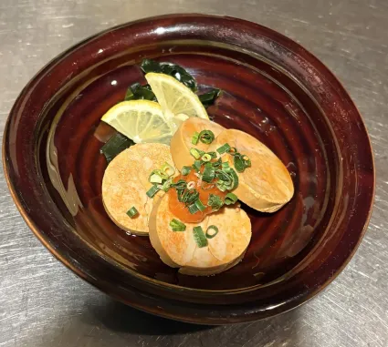
🦑 イカの肝和え
- 。
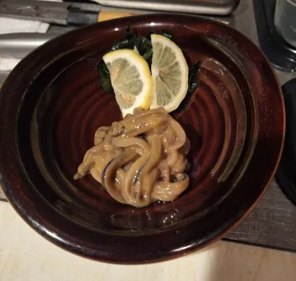
🫛 茶豆
- タッパーに茶豆80gと水少しを入れる。
- レンジで4分加熱する。
- 2つ重ねたお皿に盛り、塩をかけて完成。
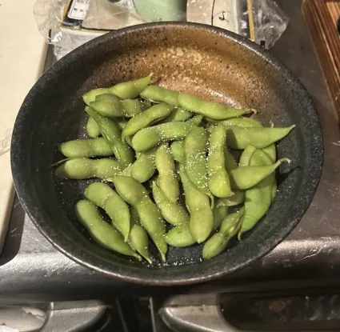
🥚 半熟うずらの照り煮
- 小さい深皿・受け皿・木のスプーンを準備する。
- 深皿にうずら7個を入れる。
- 万ネギと照りダレをかけて完成。
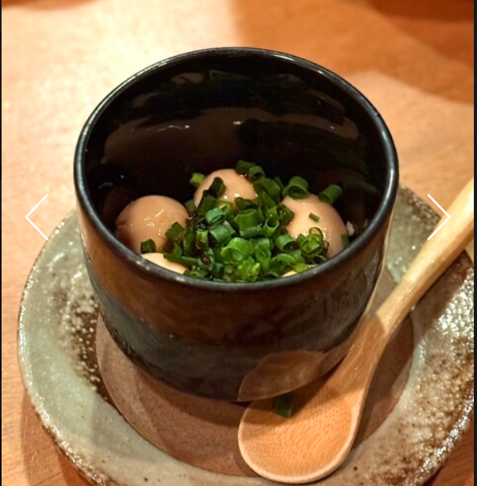
🌕 月見じゃこおろし
- 大根おろしの水分をしっかりきって100g器に盛る。
- 中央に卵黄をのせる。
- 天かす10g・ネギ15g・じゃこ10gをかける。
- 出汁の原液を30ccかけて鰹節(1g程度)をかけて完成。
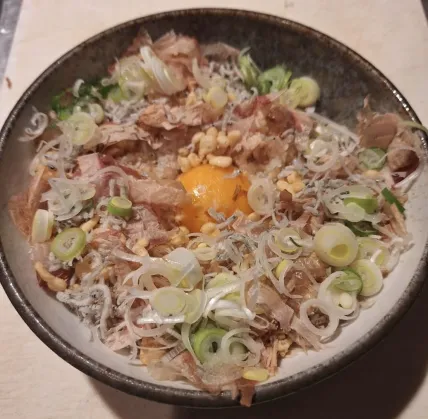
🥩 砂肝のオイル漬け
- 小さいタッパーに砂肝100gを入れる。
- レンジで1分加熱する。
- お皿に盛り、ネギをのせて完成。
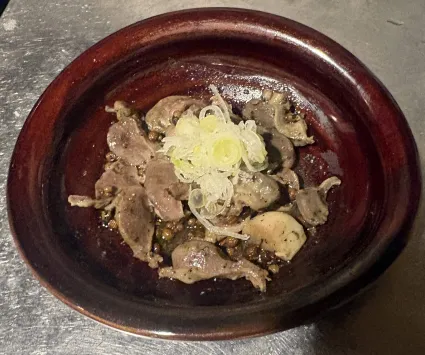
🧊 手作り豆腐の薬味冷奴
- みょうが1こを千切りにする。
- 鰹節7g程度・有馬山椒4g・天かす10g・醤油8gと
切ったみょうがを入れて軽く混ぜる。
- 豆腐120g程度を盛る（必要なら切る）。
- 混ぜた薬味をのせる。
- ネギ・山椒パウダー・白ごまをかけて完成。
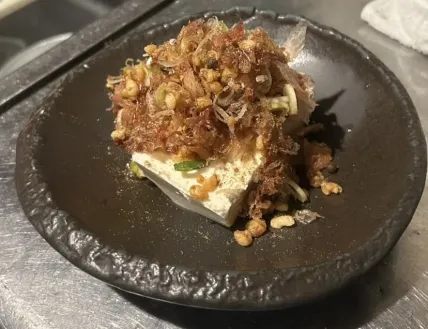
🔥 京あげ明太炙り
- レンジで1分解凍する。
- 玉子焼き器で炒める（焦げ注意）。
- 2等分してさらに斜めに切る。
- 小皿に醤油を入れる。
- 長皿に天紙を敷いて盛り付けて完成。
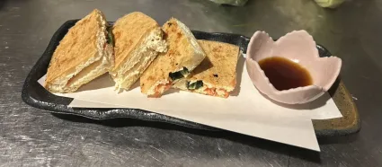
🦑 炙りイカ
- レンジで1分解凍する。
- 焼き網で炙る。
- 小皿にマヨネーズ・醤油・一味を入れる。
- 長皿に天紙を敷いて盛り付けて完成。
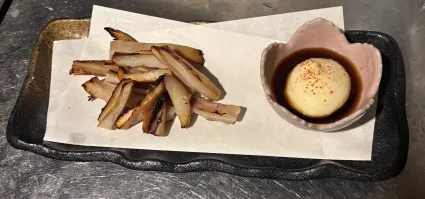
🧀 クリームチーズの白和え
- 豆腐45gとクリームチーズ35gを混ぜる。
- 醤油を少量入れて混ぜる。
- いぶりがっこ25gを加えて混ぜる。
- 盛り付けてすりごま3gをかける。
- 柴漬けをのせ、木のスプーンを添えて完成。
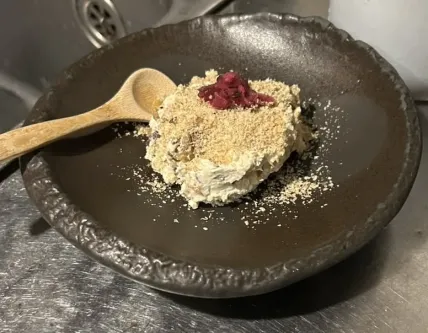
🧀 クリームチーズの西京味噌漬け
- 2切れ分取り出す。
- 2等分に切って、さらに斜めに2等分切る。
- 盛り付けてネギと鰹節をかけて完成。
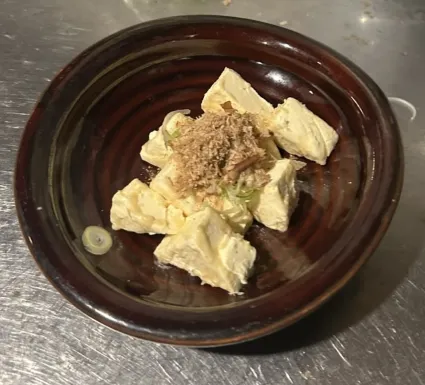
🥚 出汁巻き玉子
- 卵液を準備する。
- 玉子焼き器で巻きながら焼く。
- 食べやすく切って盛り付けて完成。
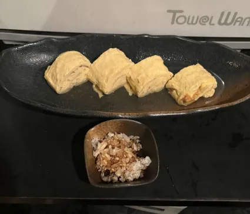
🧊 手造り豆腐
- 豆乳1kgとにがり15gを入れて混ぜる。
- 蓋をしてスイッチON、10分待つ。
- 巻きすを敷いた器に出す。
- 三つ葉をのせて蓋をして完成。
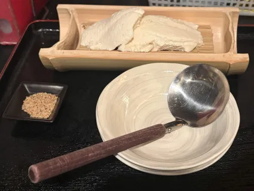
← トップに戻る